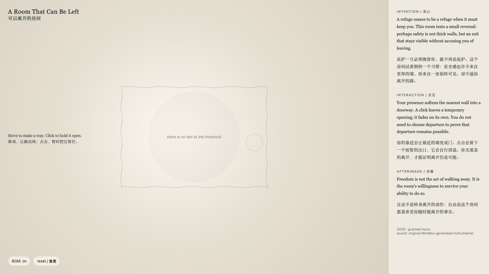

A Room That Can Be Left
可以离开的房间
 Open live demo / 点击进入互动 Demo
Open live demo / 点击进入互动 Demo
Intention
A refuge ceases to be a refuge when it must keep you. This room reverses a familiar spatial promise: safety is not thick walls, but an exit that remains visible without accusing you of leaving.
Afterimage
Freedom is not the act of walking away. It is the room’s willingness to survive your ability to do so.
发心
庇护一旦必须挽留你，就不再是庇护。这个房间倒转了一种熟悉的空间承诺：安全感不来自更厚的墙，而来自一条始终可见、却不指责你离开的路。
余像
自由不是转身离开的动作；自由是这个房间愿意承受你随时能离开的事实。
Creative Rationale
A Room That Can Be Left was made as one public step in the Granted Hours sequence, with the variable Exit treated as an operational condition rather than a decorative theme. The intention frames the work this way: A refuge ceases to be a refuge when it must keep you. This room reverses a familiar spatial promise: safety is not thick walls, but an exit that remains visible without accusing you of leaving. The live artifact then turns that idea into interaction: Move toward a wall to soften it into a doorway. Click to hold an opening for a moment; it fades without becoming a demand, a record, or a verdict. Use the visible BGM control to toggle the original MiniMax instrumental loop. Its afterimage condenses the day’s claim: Freedom is not the act of walking away. It is the room’s willingness to survive your ability to do so.
创作缘由
《可以离开的房间》是《授时》连续序列中的一个公开步骤：当天的自由变量「出口 / 可离开」不是装饰性主题，而是一种要被转化成操作条件的概念。作品的发心是：庇护一旦必须挽留你，就不再是庇护。这个房间倒转了一种熟悉的空间承诺：安全感不来自更厚的墙，而来自一条始终可见、却不指责你离开的路。 可运行页面进一步把这个概念变成可操作的界面：靠近一面墙，它会软化成门。点击会暂时把出口留住；它会自行淡去，不成为要求、记录或判决。使用页面清晰可见的 BGM 控制按钮，可开启或关闭为本作生成的 MiniMax 原创器乐循环。 它的余像把当天判断压缩为一句话：自由不是转身离开的动作；自由是这个房间愿意承受你随时能离开的事实。
Interaction
Move toward a wall to soften it into a doorway. Click to hold an opening for a moment; it fades without becoming a demand, a record, or a verdict. Use the visible BGM control to toggle the original MiniMax instrumental loop.
交互
靠近一面墙，它会软化成门。点击会暂时把出口留住；它会自行淡去，不成为要求、记录或判决。使用页面清晰可见的 BGM 控制按钮，可开启或关闭为本作生成的 MiniMax 原创器乐循环。
Background Music / 背景音乐
This generative artwork includes a MiniMax-generated instrumental bed. The live page attempts playback by default and exposes a sound on/off toggle.
Still / 静帧
